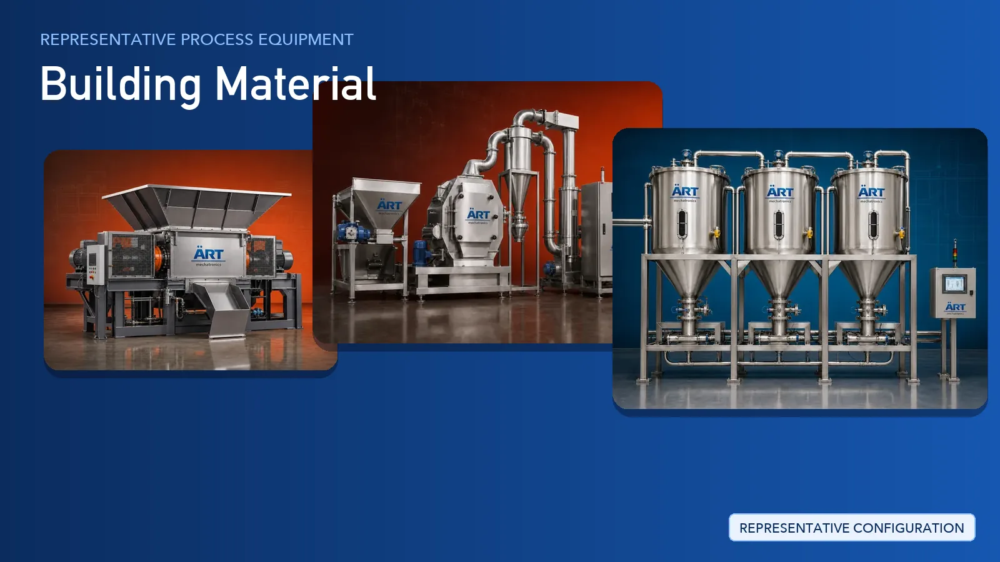

Building Material Plant & Machinery Solutions (Cement, Mortar, Sand, Fly Ash & Mineral Handling Systems)
The building material industry covers cement and clinker grinding, ready-mix concrete, dry mix mortar and wall putty, sand and aggregate, stone and tile, fly ash and gypsum — all of them bulk, abrasive and dust-heavy materials.

About Building Material processing
ART Mechatronics supplies the process and material-handling equipment that goes into building material plants rather than the end-product forming machines. We engineer grinding and classification systems, screening and separation, belt, screw, pneumatic and bucket conveying, storage silos and feed bins, centralised dust collection and pollution control, and automated bagging and palletising lines — delivered as one integrated turnkey engineering solution.
Complete Building Material Process Flow
Cement, clinker, fly ash, gypsum, sand, stone, minerals and additives arrive in bags, bulkers or tippers and are taken into intake bins, pits and storage.
Provides a controlled, dust-managed intake point.
Lump material, stone, clinker and hard minerals are broken down to a workable feed size for the grinding section.
Prepares a uniform feed for milling.
Crushed material is ground to the required fineness and classified, with oversize returned to the mill for regrinding.
Delivers:
- Consistent product fineness
- Closed-circuit grinding with classification
- Grinding integrated with dust extraction
- Construction suited to abrasive materials
Ground material is screened and cleared of tramp metal, then conveyed and elevated into silos and day bins ahead of mixing or packing.
Enclosed transfer keeps material contained and the plant clean.
For dry mix mortar, wall putty, tile adhesive and similar formulated products, weighed ingredients are dosed and blended into a homogeneous dry mix.
Ensures:
- Controlled recipe dosing
- Homogeneous dry blend
- Repeatable batch-to-batch quality
Dust released at intake, crushing, grinding, screening, transfer and packing points is captured at source and filtered before air is discharged.
Supports:
- Cleaner working environment
- Pollution control compliance
- Recovery of captured fines back into process
- Reduced wear on plant and machinery
Finished cement, mortar, putty, powder or granular product is filled into bags or sacks, sealed, checked and palletised for dispatch.
Suitable for sack, bag and bulk dispatch formats.
Plant-wide sequencing, interlocks and monitoring are handled by:
Machinery Required for Building Material Plant
- Bag Dump Station & Intake Hopper
- Crusher / Crushing Machine
- Hammer Mill Machine
- Ball Mill Machine
- Roller Mill Machine
- Impact Pulverizer Machine
- Air Classifier
- Screener / Vibro / Plan Sifter
- Magnetic Separator
- Conveyor Belt
- Screw Conveyor
- Pneumatic Conveyor
- Bucket Elevator
- Silo & Day Bin
- Ribbon Mixer / Plough Shear Mixer
- Weighing & Dosing
- Bag House Dust Collector Machine
- Centralised Dust Collection System
- Bagging & Sack Packing
- Palletizer & Stretch Wrapping
- PLC Automation Control Panel
Turnkey Building Material Plant Solutions
ART Mechatronics offers complete turnkey engineering solutions for building material plants, including:
- Process design & plant layout
- Grinding and classification systems
- Screening and separation systems
- Conveying, elevation and pneumatic transfer
- Storage silos, feed bins and hoppers
- Dry mixing and dosing systems
- Centralised dust collection and pollution control
- Bagging, packing and palletising lines
- Automation & control panels
- Installation & commissioning
- After-sales support
We customize solutions based on:
- Material type (cement, fly ash, gypsum, sand, stone, minerals)
- Abrasiveness and dust behaviour of the material
- Production capacity
- Level of automation
- Bagging and dispatch format
Our scope is the process, handling, dust control and packing equipment inside the plant — not the end-product forming machinery.
Why Choose ART Mechatronics for Building Material
- Engineering expertise across grinding, handling and packing systems
- Heavy-duty construction built for abrasive, dusty materials
- Dust collection engineered into the plant, not added afterwards
- Enclosed conveying that keeps material contained
- Integrated automation and control
- Single-source responsibility from layout to commissioning
- Global export and project execution capability
Where it's used
Get pricing & specs for the Building Material plant
Share the product, target capacity, current process and plant location. These details help our engineers discuss the right machine or line configuration.
One partner, from design to start-up
ART Mechatronics designs, manufactures, installs and commissions your Building Material plant solution with regional presence in India, UAE and Thailand.